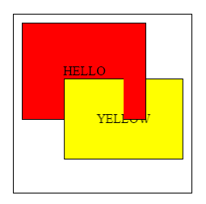
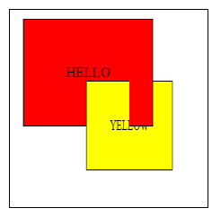
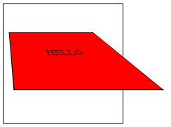
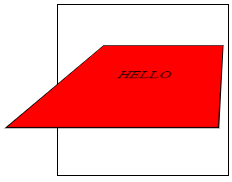
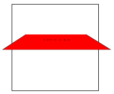
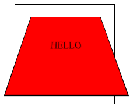
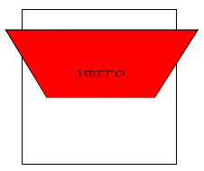

一、3D Transform 屬性
1、rotateX()
此文字方塊以X軸為軸心做旋轉，另外rotateY()與rotateZ()則分別就是以Y軸、以Z軸為軸心做旋轉，
例如：
transform : rotateX(30deg);代表以X軸為軸心，順時鐘轉30度。
2、transform-style
其屬性值有兩種，分別為flat(預設值)、preserve-3d，
表示transform的呈現是否要以平面或3D來顯示，
當一個block使用preserve-3d後，其子元素也會一併套用3d效果，
以下例子為兩相差10度的div，一起轉20度後的旋轉前與旋轉後畫面。
<!DOCTYPE html> <html> <head> <style> #div1 { position: relative; height: 200px; width: 200px; margin: 100px; padding: 10px; border: 1px solid black; } #div2 { padding: 50px; position: absolute; border: 1px solid black; background-color: red; transform: rotateY(0deg); transform-style: preserve-3d; } #div3 { padding: 40px; position: absolute; border: 1px solid black; background-color: yellow; transform: rotateY(10deg); } </style> </head> <body> <div id="div1"> <div id="div2"> HELLO <div id="div3">YELLOW</div> </div> </div> <p><b>Note:</b> Internet Explorer 10 and earlier versions do not support the transform-style property.</p> <p><b>Note:</b> Chrome, Safari and Opera supports an alternative, the -webkit-transform-style property.</p> </body> </html>

<!DOCTYPE html> <html> <head> <style> #div1 { position: relative; height: 200px; width: 200px; margin: 100px; padding: 10px; border: 1px solid black; } #div2 { padding: 50px; position: absolute; border: 1px solid black; background-color: red; transform: rotateY(20deg); transform-style: preserve-3d; } #div3 { padding: 40px; position: absolute; border: 1px solid black; background-color: yellow; transform: rotateY(30deg); } </style> </head> <body> <div id="div1"> <div id="div2"> HELLO <div id="div3">YELLOW</div> </div> </div> <p><b>Note:</b> Internet Explorer 10 and earlier versions do not support the transform-style property.</p> <p><b>Note:</b> Chrome, Safari and Opera supports an alternative, the -webkit-transform-style property.</p> </body> </html>

3、perspective
其功用就是來模擬人眼從何高度來看該物體，
如果perspective的數值是0，則代表該perspective從沒被設定過，數值越大代表視角越從遠處看。
<!DOCTYPE html> <html> <head> <style> #div1 { position: relative; height: 150px; width: 150px; margin: 50px; padding: 10px; border: 1px solid black; -webkit-perspective: 150px; /* Chrome, Safari, Opera */ perspective: 150px; } #div2 { padding: 50px; position: absolute; border: 1px solid black; background-color: red; -webkit-transform: rotateX(45deg); /* Chrome, Safari, Opera */ transform: rotateX(45deg); } </style> </head> <body> <div id="div1"> <div id="div2">HELLO</div> </div> </body> </html>
4、perspective-origin
<!DOCTYPE html> <html> <head> <style> #div1 { position: relative; height: 150px; width: 150px; margin: 50px; padding: 10px; border: 1px solid black; -webkit-perspective: 150px; /* Chrome, Safari, Opera */ -webkit-perspective-origin: 10% 10%; /* Chrome, Safari, Opera */ perspective: 150px; perspective-origin: 50% 50%; } #div2 { padding: 50px; position: absolute; border: 1px solid black; background-color: red; -webkit-transform: rotateX(45deg); /* Chrome, Safari, Opera */ transform: rotateX(45deg); } </style> </head> <body> <div id="div1"> <div id="div2">HELLO</div> </div> </body> </html>
其預設值為perspective-origin : 50% 50%;或perspective-origin : center center;，第一個數值為控制X軸水平視角，
第二個數值為控制Y軸垂直視角。
例如：
perspective-origin : 0% 50%;或perspective-origin : left center;代表從物體的最左邊觀看，

perspective-origin : 100% 50%;或perspective-origin : right center;代表從物體的最右邊觀看，

perspective-origin : 50% 100%;或perspective-origin : center bottom;代表與物體面平行觀看，

perspective-origin : 50% 0%;或perspective-origin : center top;而第二個數值小於50%的，代表視角逐漸由水平往垂直方向觀看。

perspective-origin : 50% 200%;而第二個數值大約超過130%的，代表從物體的下方往上觀看。

5、backface-visibility
<!DOCTYPE html> <html> <head> <style> div { position: relative; height: 60px; width: 60px; background-color: red; -webkit-transform: rotateY(180deg); /* Chrome, Safari, Opera */ transform: rotateY(180deg); } #div1 { -webkit-backface-visibility: hidden; /* Chrome, Safari, Opera */ backface-visibility: hidden; } #div2 { -webkit-backface-visibility: visible; /* Chrome, Safari, Opera */ backface-visibility: visible; } </style> </head> <body> <p>This example shows two div elements, rotated 180 degrees, facing away from the user.</p> <p>The first div element has the backface-visibility property set to "hidden", and should therefore be invisible.</p> <div id="div1">DIV 1</div> <div id="div2">DIV 2</div> <p><strong>Note:</strong> The backface-visibility property is not supported in Internet Explorer 9 and earlier versions.</p> </body> </html>
此功能用來決定是否可以看到3D物體的背面，數值為visible(預設值)與hideen。
參考資料：